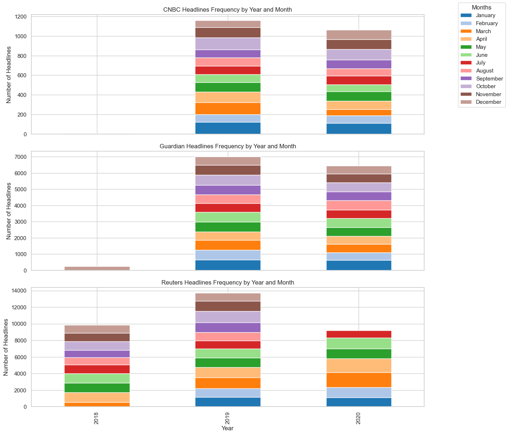
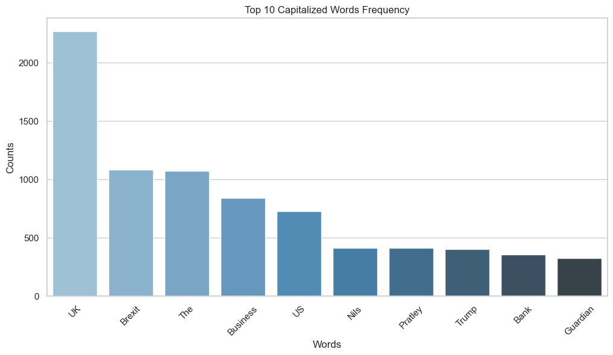

We can see here that all of the news datasets have varying numbers of data points ranging from 2800 to 32700. This will not be a problem for us since our question focuses on the impact of news headlines in general on the S&P 500, so all of this data will be combined in to a larger dataset ordered by the date of the headline. We can also see there is null data within the CNBC dataset which will be removed.
These histograms display the number of headlines given a specific length. Disregarding the bar at length of 0 in the CNBC graph due to the null data, headlines from all three stations seem to center around 60-70 words with the max being ~100 for CNBC and Reuters, and ~120 for the Guardian.
Code
cnbc_data['Time'] = ( cnbc_data['Time'] .str.replace(r"ET", "", regex=True) .str.strip() )# Convert the 'Time' columns to datetime format for each datasetcnbc_data['Time'] = pd.to_datetime(cnbc_data['Time'], errors='coerce')guardian_data['Time'] = pd.to_datetime(guardian_data['Time'], errors='coerce')reuters_data['Time'] = pd.to_datetime(reuters_data['Time'], errors='coerce')# Adding additional columns for time analysisfor df in [cnbc_data, guardian_data, reuters_data]:# Extract date parts for time-based analysis df['Year'] = df['Time'].dt.year df['Month'] = df['Time'].dt.month# Frequency of headlines by year and month for each datasetcnbc_yearly_counts = cnbc_data.groupby(['Year', 'Month']).size().unstack(fill_value=0)guardian_yearly_counts = guardian_data.groupby(['Year', 'Month']).size().unstack(fill_value=0)reuters_yearly_counts = reuters_data.groupby(['Year', 'Month']).size().unstack(fill_value=0)
/var/folders/2f/pp48ygln7m9cxl6lrzd_n_t40000gn/T/ipykernel_44103/3364551870.py:8: UserWarning: Could not infer format, so each element will be parsed individually, falling back to `dateutil`. To ensure parsing is consistent and as-expected, please specify a format.
cnbc_data['Time'] = pd.to_datetime(cnbc_data['Time'], errors='coerce')
/var/folders/2f/pp48ygln7m9cxl6lrzd_n_t40000gn/T/ipykernel_44103/3364551870.py:9: UserWarning: Could not infer format, so each element will be parsed individually, falling back to `dateutil`. To ensure parsing is consistent and as-expected, please specify a format.
guardian_data['Time'] = pd.to_datetime(guardian_data['Time'], errors='coerce')
Code
fig, ax = plt.subplots(3, 1, figsize=(14, 12), sharex=True)# Set a colormap to represent months consistentlymonth_colors = plt.colormaps["tab20"]# CNBC dataset with month colorscnbc_yearly_counts.plot(kind="bar", stacked=True, ax=ax[0], color=[month_colors(i) for i inrange(12)], legend=False)ax[0].set_title("CNBC Headlines Frequency by Year and Month")ax[0].set_ylabel("Number of Headlines")# Guardian dataset with month colorsguardian_yearly_counts.plot(kind="bar", stacked=True, ax=ax[1], color=[month_colors(i) for i inrange(12)], legend=False)ax[1].set_title("Guardian Headlines Frequency by Year and Month")ax[1].set_ylabel("Number of Headlines")# Reuters dataset with month colorsreuters_yearly_counts.plot(kind="bar", stacked=True, ax=ax[2], color=[month_colors(i) for i inrange(12)], legend=False)ax[2].set_title("Reuters Headlines Frequency by Year and Month")ax[2].set_ylabel("Number of Headlines")ax[2].set_xlabel("Year")# Adding a single legend for the monthsmonth_names = [calendar.month_name[i] for i inrange(1, 13)]fig.legend(month_names, loc="upper right", title="Months")plt.tight_layout(rect=[0, 0, 0.85, 1]) # Adjust layout to fit the legendplt.show()

These graphs depict the number of headlines per month per year. With this, we can see that the earlier months of the year seem to have a higher concentration of headlines.
Code
# Remove extra data columnsfor df in [cnbc_data, guardian_data, reuters_data]: df.drop(columns=['Year','Month'],inplace=True)
[*********************100%***********************] 1 of 1 completed
Code
data_hlcv.head()
Price
High
Low
Close
Volume
Ticker
^GSPC
^GSPC
^GSPC
^GSPC
Date
2017-12-01 00:00:00+00:00
2650.620117
2605.520020
2642.219971
3950930000
2017-12-04 00:00:00+00:00
2665.189941
2639.030029
2639.439941
4025840000
2017-12-05 00:00:00+00:00
2648.719971
2627.729980
2629.570068
3547570000
2017-12-06 00:00:00+00:00
2634.409912
2624.750000
2629.270020
3253080000
2017-12-07 00:00:00+00:00
2640.989990
2626.530029
2636.979980
3297060000
Data Exploration
Code
data_hlcv.describe()
Price
High
Low
Close
Volume
Ticker
^GSPC
^GSPC
^GSPC
^GSPC
count
669.000000
669.000000
669.000000
6.690000e+02
mean
2883.568308
2849.033738
2867.277964
3.965081e+09
std
198.117998
206.057495
202.285824
1.154337e+09
min
2300.729980
2191.860107
2237.399902
1.296530e+09
25%
2739.189941
2709.540039
2724.439941
3.300220e+09
50%
2856.669922
2825.389893
2843.489990
3.635780e+09
75%
2999.149902
2970.090088
2984.870117
4.156640e+09
max
3393.520020
3378.830078
3386.149902
9.053950e+09
Code
missing_values = data_hlcv.isnull().sum()print("Missing values in each column:")print(missing_values)
Missing values in each column:
Price Ticker
High ^GSPC 0
Low ^GSPC 0
Close ^GSPC 0
Volume ^GSPC 0
dtype: int64
The S&P 500 dataset from December 1, 2017, to July 31, 2020, contains 669 daily records with columns for High, Low, Close, and Volume, with no missing values. The average ‘High’, ‘Low’, and ‘Close’ prices are around 2883, 2849, and 2867, respectively, with standard deviations near 200 points, indicating moderate volatility. The ‘Volume’ data, averaging 3.97 billion shares, shows considerable variability, ranging from 1.3 billion to 9.05 billion, reflecting spikes in trading activity during certain market events.
To prepare for analysis, normalization or standardization may be beneficial to handle the scale differences, particularly between price and volume data. This initial overview confirms a relatively stable daily distribution, setting up further analysis on trends, volatility, and potential event impacts on S&P 500 performance.
This is the stock price of the S&P 500 over min and max dates covered by the news headlines. Some noticeable features that are included in this graph is the large dip during early 2020 caused by covid. This will have an interesting impact on our model since the news did play a big role in the scare factor for COVID-19, but the fact that it was caused by a global epidemic may skew the embeddings of other words.
import matplotlib.pyplot as pltimport seaborn as sns# Step 1: Create the word count dictionarygurdian_string =' '.join(guardian_data['Headlines']) # Combine all headlines into one stringgurdian_string_list = gurdian_string.split(' ') # Split the string into wordsgurdian_count = {}for word in gurdian_string_list:if word in gurdian_count: gurdian_count[word] +=1else: gurdian_count[word] =1# Step 2: Sort words by frequency and get the top 20 wordssorted_words =sorted(gurdian_count.items(), key=lambda item: item[1], reverse=True)top_words = sorted_words[100:120] # Select words from the 100th to the 120th most frequent# Step 3: Create lists of words and their countswords = [word for word, count in top_words]counts = [count for word, count in top_words]# Step 4: Plot the bar chartplt.figure(figsize=(12, 6))sns.barplot(x=words, y=counts, palette="Blues_d") # Remove 'hue' argumentplt.xlabel('Words')plt.ylabel('Counts')plt.title('Top 20 Words Frequency')plt.xticks(rotation=45)plt.show()
/var/folders/2f/pp48ygln7m9cxl6lrzd_n_t40000gn/T/ipykernel_44103/3014567614.py:26: FutureWarning:
Passing `palette` without assigning `hue` is deprecated and will be removed in v0.14.0. Assign the `x` variable to `hue` and set `legend=False` for the same effect.
sns.barplot(x=words, y=counts, palette="Blues_d") # Remove 'hue' argument
This histogram captures a range of words and graphs them by the number of occurrences each one has. Currently words 100-120 are being displayed since many of the top words are meaningless words like articles, prepositions, pronouns, etc. The current graph has a few notable words like fears, energy, government, China, and shares.
Code
filtered_words = {word: count for word, count in gurdian_count.items() ifany(c.isupper() for c in word)}top_words =sorted(filtered_words.items(), key=lambda item: item[1], reverse=True)[:10]# Extracting words and countswords = [item[0] for item in top_words]counts = [item[1] for item in top_words]plt.figure(figsize=(12, 6))sns.barplot(x=words, y=counts, palette="Blues_d") # Simple barplot without hueplt.xlabel('Words')plt.ylabel('Counts')plt.title('Top 10 Capitalized Words Frequency')plt.xticks(rotation=45)plt.show()
/var/folders/2f/pp48ygln7m9cxl6lrzd_n_t40000gn/T/ipykernel_44103/2496366710.py:9: FutureWarning:
Passing `palette` without assigning `hue` is deprecated and will be removed in v0.14.0. Assign the `x` variable to `hue` and set `legend=False` for the same effect.
sns.barplot(x=words, y=counts, palette="Blues_d") # Simple barplot without hue

This graph is a more filtered version of the previous graph and only displays the top 10 words that start with a capital letter. This aims to get to most popular proper nouns that news headlines contain.
Original shape: (3080, 3)
Cleaned shape: (2800, 3)
Code
# Drop rows with null valuesguardian_cleaned = guardian_data.dropna()# Convert 'Time' column to datetime, setting invalid dates to NaTguardian_cleaned['Time'] = pd.to_datetime(guardian_cleaned['Time'], errors='coerce').dt.date# Check the rows with NaT (invalid dates)invalid_dates = guardian_cleaned[guardian_cleaned['Time'].isna()]guardian_cleaned.dropna(subset=['Time'], inplace=True)print("Original shape:", guardian_data.shape)print("Cleaned shape:", guardian_cleaned.shape)
Original shape: (17800, 2)
Cleaned shape: (17760, 2)
/var/folders/2f/pp48ygln7m9cxl6lrzd_n_t40000gn/T/ipykernel_44103/2795643894.py:5: SettingWithCopyWarning:
A value is trying to be set on a copy of a slice from a DataFrame.
Try using .loc[row_indexer,col_indexer] = value instead
See the caveats in the documentation: https://pandas.pydata.org/pandas-docs/stable/user_guide/indexing.html#returning-a-view-versus-a-copy
guardian_cleaned['Time'] = pd.to_datetime(guardian_cleaned['Time'], errors='coerce').dt.date
/var/folders/2f/pp48ygln7m9cxl6lrzd_n_t40000gn/T/ipykernel_44103/2795643894.py:9: SettingWithCopyWarning:
A value is trying to be set on a copy of a slice from a DataFrame
See the caveats in the documentation: https://pandas.pydata.org/pandas-docs/stable/user_guide/indexing.html#returning-a-view-versus-a-copy
guardian_cleaned.dropna(subset=['Time'], inplace=True)
2. Removing extraneous columns
Code
cnbc_data_cleaned = cnbc_cleaned.drop(columns=['Description'], errors='ignore')reuters_cleaned = reuters_data.drop(columns=['Description'], errors='ignore')print("CNBC dataset columns after cleaning:", cnbc_data_cleaned.columns)print("Reuters dataset columns after cleaning:", reuters_cleaned.columns)print("Guardian dataset columns after cleaning:", guardian_data.columns)
CNBC dataset columns after cleaning: Index(['Headlines', 'Time'], dtype='object')
Reuters dataset columns after cleaning: Index(['Headlines', 'Time'], dtype='object')
Guardian dataset columns after cleaning: Index(['Time', 'Headlines'], dtype='object')
3. Combine the three news dataset with stock data
Code
stock_data = data_hlcv.reset_index()[['Date', 'Close']]# Flatten the column headers if they are multi-levelstock_data.columns = stock_data.columns.map(lambda x: x[1] ifisinstance(x, tuple) else x)stock_data.rename(columns={stock_data.columns[0]: 'Date', stock_data.columns[1]: 'Close'}, inplace=True)stock_data['trend_up'] = stock_data['Close'].shift(-1) > stock_data['Close']stock_data.head()
/var/folders/2f/pp48ygln7m9cxl6lrzd_n_t40000gn/T/ipykernel_44103/3131110233.py:2: SettingWithCopyWarning:
A value is trying to be set on a copy of a slice from a DataFrame.
Try using .loc[row_indexer,col_indexer] = value instead
See the caveats in the documentation: https://pandas.pydata.org/pandas-docs/stable/user_guide/indexing.html#returning-a-view-versus-a-copy
guardian_cleaned['Date'] = pd.to_datetime(guardian_cleaned['Time']).dt.date
/var/folders/2f/pp48ygln7m9cxl6lrzd_n_t40000gn/T/ipykernel_44103/3131110233.py:6: SettingWithCopyWarning:
A value is trying to be set on a copy of a slice from a DataFrame
See the caveats in the documentation: https://pandas.pydata.org/pandas-docs/stable/user_guide/indexing.html#returning-a-view-versus-a-copy
guardian_cleaned.drop(columns=['Time'],inplace=True)
# Preprocess the text - clean the headlinesdef preprocess_text(text): text = text.lower() text = re.sub(r'\W', ' ', text) # remove non-word characters text = re.sub(r'\s+', ' ', text) # remove extra spacesreturn text.strip()final_dataset['cleaned_headlines'] = final_dataset['Headlines'].apply(preprocess_text)# Tokenize - Create a vocabulary (word to integer mapping)all_words =' '.join(final_dataset['cleaned_headlines']).split()vocab = {word: idx +1for idx, word inenumerate(set(all_words))} # map words to unique integers# Tokenize the dataset - convert each word in a headline to its corresponding integerdef tokenize(text, vocab):return [vocab[word] for word in text.split() if word in vocab]final_dataset['tokenized_headlines'] = final_dataset['cleaned_headlines'].apply(lambda x: tokenize(x, vocab))final_dataset[['Headlines', 'tokenized_headlines']].head()
Headlines
tokenized_headlines
0
Jim Cramer: A better way to invest in the Covi...
[20281, 2152, 2495, 17958, 6795, 6156, 22075, ...
1
Cramer's lightning round: I would own Teradyne
[2152, 11274, 21377, 5475, 7020, 15181, 12176,...
2
Cramer's week ahead: Big week for earnings, ev...
[2152, 11274, 13159, 15331, 5385, 13159, 641, ...
3
IQ Capital CEO Keith Bliss says tech and healt...
[20338, 8270, 10813, 21823, 1630, 18860, 6686,...
4
Wall Street delivered the 'kind of pullback I'...
[3245, 7498, 14664, 19323, 4540, 15886, 20438,...
Code
embedding_size =50embedding_matrix = {}for word, idx in vocab.items(): embedding_matrix[word] = np.random.randn(embedding_size) # Random vector for each wordembedding_df = pd.DataFrame.from_dict(embedding_matrix, orient='index')embedding_df.head()
0
1
2
3
4
5
6
7
8
9
...
40
41
42
43
44
45
46
47
48
49
tokyo
-0.909038
0.111714
0.135844
0.121991
0.069522
0.609672
0.520555
0.163394
-2.255451
0.741887
...
-0.665506
0.380471
-1.134920
-0.685470
0.243377
1.456608
1.768986
-0.763700
0.560469
1.925293
duchess
-0.278158
-1.861978
-0.118346
0.054485
0.715117
0.424026
-1.554302
1.111206
-0.402495
-0.653515
...
1.354530
-1.375424
-0.633204
0.584586
-1.347454
-0.792132
-0.311770
0.430932
0.858771
-0.409338
34
0.055202
1.283158
1.030810
-0.328384
-2.383228
-0.028978
-1.315927
0.165481
-0.867256
-1.048737
...
-0.716132
-0.015412
-0.438219
0.248095
-1.152182
0.689959
-0.970720
-0.416782
0.537282
-1.279187
paradigm
0.697029
0.346426
-0.199971
-0.927646
-1.070653
-1.586408
0.043306
2.050311
-1.032778
-0.231333
...
0.052561
-0.442062
-0.137786
1.740333
-0.072000
-1.308064
-2.409543
-1.432540
0.153129
-0.524008
mexican
1.595857
-0.747090
-1.675548
-0.361689
-0.497321
0.679887
-0.216000
-0.776304
-0.345032
2.082012
...
0.465328
1.136096
1.121448
0.170850
0.532376
-0.556703
-0.983512
-0.212872
-1.781229
-2.542501
5 rows × 50 columns
First Model
Code
# Prepare headlines column for TF-IDFdef clean_headlines(data):# Lower case all values data.loc[:, 'Headlines'] = data['Headlines'].apply(lambda x: x.lower())# Remove special characters and numbers data.loc[:, 'Headlines'] = data['Headlines'].apply(lambda x: re.sub(r'[^a-z\s]', ' ', x))# Remove extra spaces data.loc[:, 'Headlines'] = data['Headlines'].apply(lambda x: re.sub(r'\s+', ' ', x).strip())
Code
# Clean headlinestemp_df = final_dataset.copy()clean_headlines(temp_df)#Group by date and concat all headlines into one str for each daygrouped_dataset = temp_df.groupby('Date').agg( Headlines=('Headlines', ' '.join), trend_up=('trend_up', 'first') ).reset_index()
Code
# First Model: Logistic Regression Model with TF-IDF featuresdata = grouped_dataset[['Headlines', 'trend_up']].copy()vectorizer = TfidfVectorizer(max_features=800) # Limit to top 800 features for simplicityX = vectorizer.fit_transform(data['Headlines']).toarray()y = data['trend_up'].astype(int).values X_train, X_test, y_train, y_test = train_test_split(X, y, test_size=0.2, random_state=42)model = LogisticRegression(random_state=42, max_iter=1500)model.fit(X_train, y_train)y_pred_test = model.predict(X_test)y_pred_train = model.predict(X_train)train_accuracy = accuracy_score(y_train, y_pred_train)test_accuracy = accuracy_score(y_test, y_pred_test)# Display resultsprint("Test Accuracy:", test_accuracy)print("Train Accuracy:", train_accuracy)print("\nClassification Report(Test):\n", classification_report(y_test, y_pred_test))
# Define a range of max_features values to represent model complexitycomplexities = [50, 100, 200, 400, 600, 800, 1000, 1200]train_errors = []test_errors = []for max_features in complexities:# Create TF-IDF vectorizer with the current max_features vectorizer = TfidfVectorizer(max_features=max_features) X = vectorizer.fit_transform(data['Headlines']).toarray() y = data['trend_up'].astype(int).values# Split data into training and testing sets X_train, X_test, y_train, y_test = train_test_split(X, y, test_size=0.2, random_state=42)# Train logistic regression model model = LogisticRegression(random_state=42, max_iter=1500) model.fit(X_train, y_train)# Predict and compute errors train_accuracy = accuracy_score(y_train, model.predict(X_train)) test_accuracy = accuracy_score(y_test, model.predict(X_test)) train_errors.append(1- train_accuracy) test_errors.append(1- test_accuracy)# Plotting the fitting graphplt.figure(figsize=(10, 6))plt.plot(complexities, train_errors, label="Training Error", marker='o')plt.plot(complexities, test_errors, label="Test Error", marker='o')plt.axvline(x=complexities[np.argmin(test_errors)], linestyle='--', color='gray', label="Optimal Complexity")plt.title("Fitting Graph: Training vs. Test Error")plt.xlabel("Model Complexity (max_features)")plt.ylabel("Error(1 - Accuracy)")plt.legend()plt.grid()plt.show()